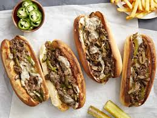

Philly Cheesesteak

Description
This easy Philly Cheesesteak Recipe is the ultimate game day fare! Tender
bites of sirloin, sautéed peppers and onions, and melted provolone cheese
are all cooked up in one skillet and loaded on toasted hoagie rolls.
Ingredients
- STEAK: Strip steaks or boneless rib eyes work best.
- ONION
- BELL PEPPERS
- CHEESE
- ROLLS
Steps
-
Start by giving the steak a quick marinade with olive oil, garlic, and
balsamic.
-
Roast the bell peppers until they're tender and have just a hint of
caramelization.
-
While the peppers roast, sauté the onions to develop golden color and
sweet flavor.
-
Once the peppers and onions are ready, sear the steak in a hot skillet
until just cooked through.
-
Add the veggies to the pan and taste for seasoning, then layer the
sliced cheese over the top and let it melt into the mixture. We stir it
into the steak mixture once it melts, but you can leave it on top too.
-
Toast the rolls lightly if you like, or leave them as is, then spoon in
the filling and serve with steak fries or chips.